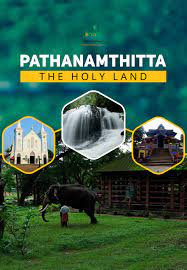

PATHANAMTHITTA
Pathanamthitta is the head quarters of Pathanamthitta district . The district was formed on Ist November 1982. It was carved out of Idukki, Alappuzha and Kollam districts.The district is close to the western Ghats and is endowed with scenic landscape comprising of low undulating hills, extensive stretches of lush forests, rivers and charming countryside. It is also known for exuberant fairs and festivals. Pathanamthitta district is known as the ‘Headquarters of Pilgrimage Tourism’, of the State. Pathanamthitta has an important place in erstwhile Travancore state the biggest taluk in the old Travancore state was Pathanamthitta and the revenue collection from this taluk played a prominent role in filling the coffers of the state